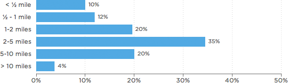

The Neighborhood School Is A Thing Of The Past
One in four New Orleans students attended a school more than five miles from home during the 2011-12 school year, according to data compiled by the Education Research Alliance.

The Orleans Parish School Board plotted how far students travelled to get to their schools in 2013. Below, the paths travelled by students of four selected charter schools:
Arthur Ashe

Bricolage Academy

KIPP Central City Primary

Lake Forest Elementary